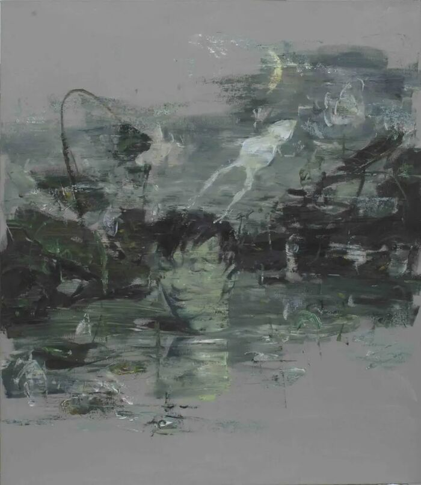
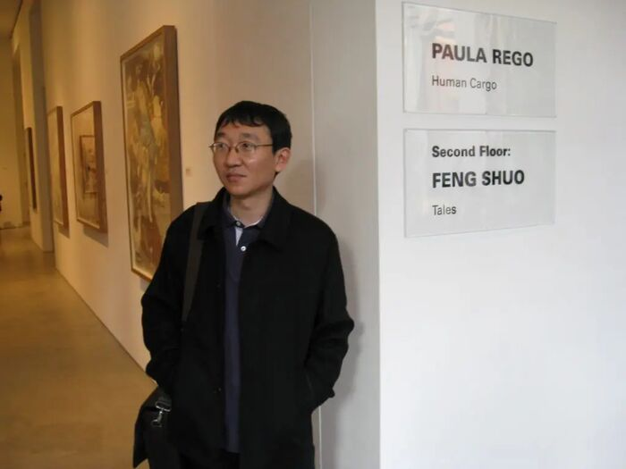
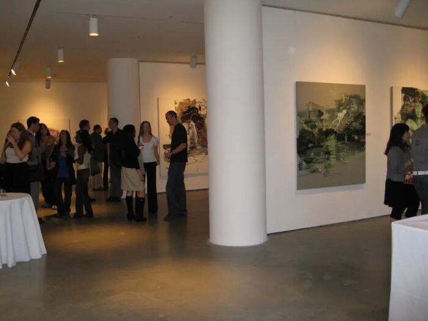
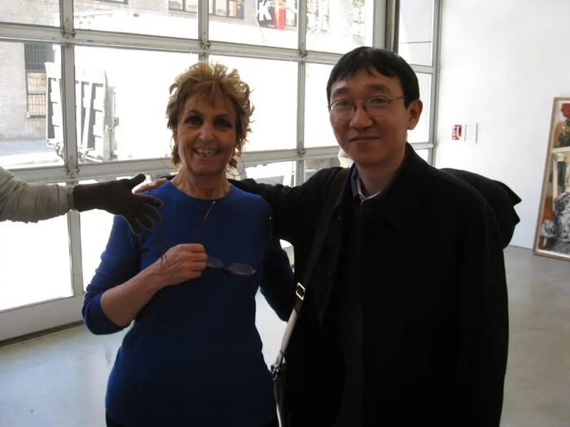

寓言Tales
2008 年纽约马乐伯画廊个展Solo exhibition at Marlborough Chelsea, New York
展览前言: 在当今的中国画家里，冯硕是独一无二的。他创造了一个充满象征的梦幻般的世界，里面有小孩儿、玩偶、动物、男人和女人，他们演出一出又一出的生命悲剧。第一次看他的画的人也许会觉得他的作品或者太柔和或者太残酷而令人难以接受、太显而易见、太浅白或太“漂亮”。不过，在我们进一步深入地赏析他的画作之后，— 这也和我们对该作品的感受很有关系 —，很快地，我们就会感受到其中的严肃和讽刺，而有时候则是沮丧和绝望。冯硕的作品所含蕴的力量来自他对绘画的热爱及他纯熟精湛的绘画技艺，可更重要的是他创作中所秉持的绝对诚意。画面上流动着书法笔迹，形象被空白圈着，或被画布上的单色围绕着。这种空白使人想到中国绘画，而用这样的手法制造出来的“窗户”更能让我们深入他的世界、他的梦境、他的噩梦、还有他经常感到的哀伤和愤怒。
冯硕吸纳融合了所有的文化的众多象征，在画画儿的时候便把他所混合过的参考事物应用在构图里。他绘画的点子和想法来自他的梦，或是当他走在路上时所获得的。冯硕是个做梦的人，可他是一个睁开眼睛注视着世界也注视着自己的存在的梦者。虽然他暗地里也书写，他只通过绘画来传达他的感受和反抗。他说：“每一天，我看见美和幸福，我也看到愤怒和悲伤。我就要呈现它们怎么来到的，又怎么发展的”。
可以称作他的自画像的那三张画：《闪念》、《记忆碎片》和《想不通》，给我们提供了认识他的脾性和处世态度：置身在一个动荡的世界当中，他总是以不变应万变，双手交叉着，沉浸在池塘里或者藏身在贝壳里，选择了观察者、抗拒者及隐士的姿态。问题不在于过洞穴独居生活，而在于只做旁观者，不参加演出，绕道而行，以一种暧昧、自由而负责任的姿态面对世界。冯硕并不是创新的奴隶，不是“反映文化取向”的奴隶，也不受科技的主宰；我们可以把著名的法国哲学家罗兰巴特的一句话用在他的身上，“顿然，我因为不现代而对外界的潮流无动于中”。当我们看了他所画的天使系列或猪系列、他的《盘中餐》中庞大的场景、围着一个四分五裂的布娃娃残体争抢的驴子们、或是他的《梦魇》里那个狡诈的鬼夜里奸污熟睡的妇女之后，我们就明白导致他这种无动于中的理由。冯硕的艺术世界激动着，像一面镜子般地吸引我们，如一个寓言般地对我们述说故事，但他不确定我们是不是想听这样的故事。
At first glance, one may feel that Feng’s works are too soft or too graphic, too elementary or even too cute, but upon closer examination this first impression quickly gives way to solemn realizations of grave irony, and sometimes even distress and despair. He is not a slave to novelty or gimmick; he rejects the “culture of reaction” as well as the homogenizing effects of mass technology. One can recognize in him the thought expressed by Roland Barthes: “Suddenly, I became indifferent to not being modern.” The strength of Feng Shuo rests in his absolute sincerity as an artist. His calligraphic brush strokes slide and cut freely and fluidly across the canvas. The empty space surrounding his subjects creates a window allowing us to peer deeply into his universe, where eerie flashbacks of his dreams and nightmares reveal recurring themes of sadness, alienation, and anger.
Feng Shuo contrasts and mixes references in order to express his feelings. Ideas come to him both while dreaming or just walking down the street. He is a dreamer who keeps his eyes open and focused on reality: watching the world, his own self, and the relationship between “Everyday I see beauty and happiness, everyday I see anger and sadness. I just want to show that. How it comes and how it goes”, says Feng.
Feng’s three self-portraits Flash of Thought, 2007, (61 x 53 1/8 in.,155 x 135 cm), Memories, 2007 (61 x 53 1/8 in., 155 x 135 cm) and Yoga, 2007, (74 3/4 x 63 in., 190 x 160 cm) provide us with clues and insights about his temperament and his perspective. We see the artist always still, immersed in a pond or hidden in a shell, the world stirring around him. His position is that of the observer, the rebel, and the hermit. The suggestion is not to recluse yourself in a cave, but rather to witness the theater of life, while not getting involved in its dramas; Feng steps to one side in order to put himself in an oblique, free and responsible position as observer.
Feng’s universe comes to life and entices us: like a mirror revealing every flaw, or like a tale, telling us a story that perhaps we do not want to hear. Feng Shuo’s subjects and concerns are worthy of Daumier and his “Comédie humaine”. But his fresh and daring approach also relates to Bada Shanren (Zhu Da) the 17th century Chinese painter whose work reveals a strong sense of dissatisfaction, loneliness, and protest against an illegitimate power.
Feng Shuo emulates the unrestrained individualism of Bada by freely exposing his feelings through his paintings. He reaches past the present conformity and redundancy dominating much of contemporary Chinese art and invents his own language in painting which places him squarely in a unique category.
展出作品Works in the exhibition


展览现场Installation views



图片来源：fengshuo.cc 原始站点存档 / 作品与现场照片承蒙艺术家提供